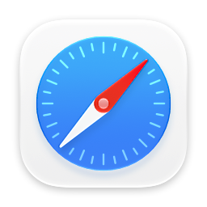
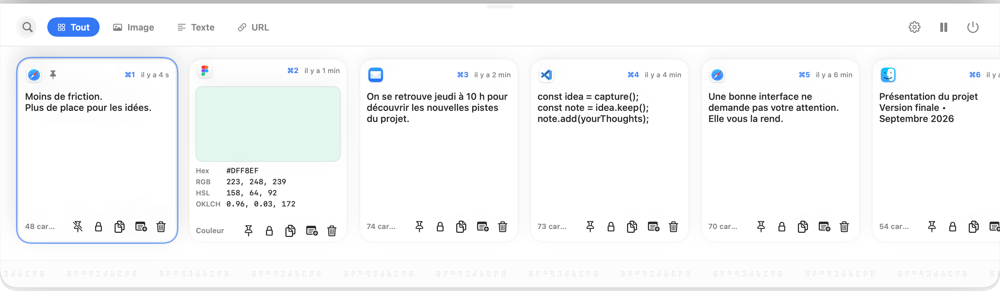
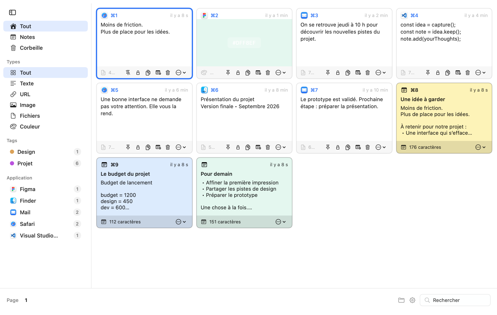
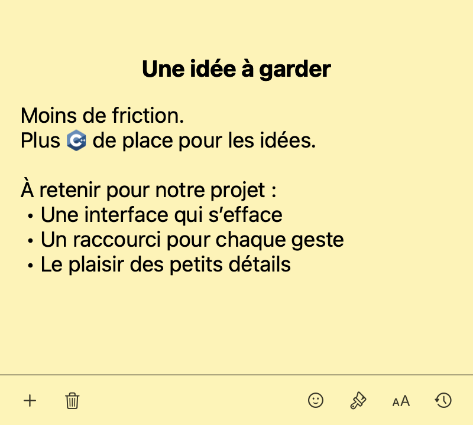
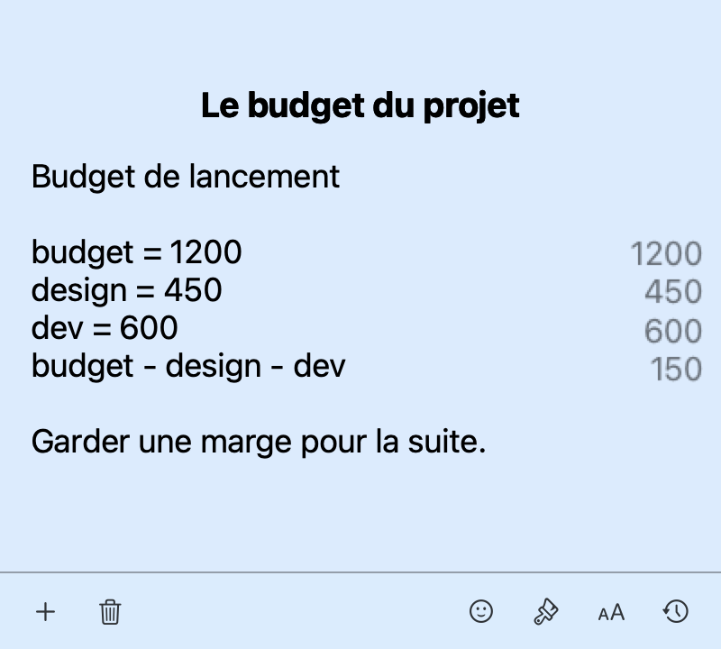
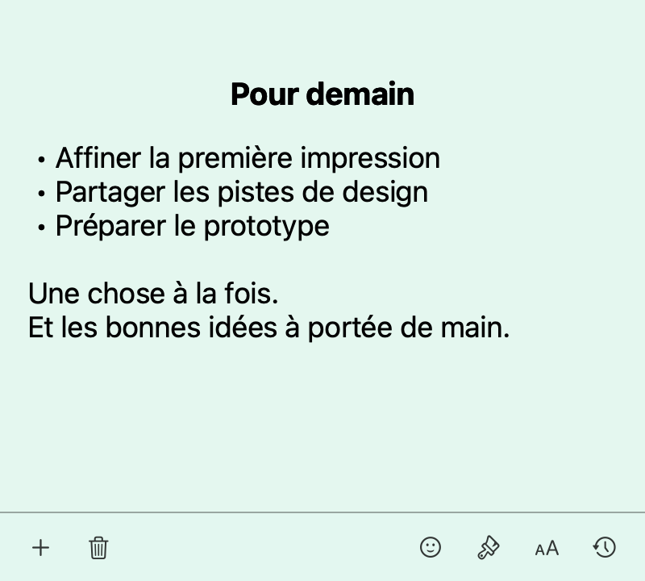

Une phrase repéréeMoins de friction.
Plus de place pour les idées.
Tout commence par une copie.
PKbrain retient textes, images, liens, fichiers et couleurs, avec leur application d’origine.
L’historique garde ce qui passe. Vos notes en font quelque chose.
Enfin réunis, dans une seule app pour Mac.
Ce que vous avez copié. Ce que vous voulez garder.
Un extrait lu trop vite. Un message à retrouver. Une couleur pour plus tard.
Ce que vous copiez mérite parfois mieux que le prochain ⌘V.

Une phrase repéréeMoins de friction.
Plus de place pour les idées.
PKbrain retient textes, images, liens, fichiers et couleurs, avec leur application d’origine.
Moins de friction.
Plus de place pour les idées.
Une carte d’historique devient une sticky note. Vous emportez le contenu, pas juste son souvenir.
Moins de friction.
Plus de place pour les idées.
↳ À reprendre pour
notre prochain projet.
Complétez, organisez et calculez dans la note. L’historique devient votre matière à penser.
Les vues natives de PKbrain, capturées spécialement pour cette présentation.
Un espace propre. Juste l’app et vos idées.





⌘⇧V. Votre historique descend depuis la barre des menus. Retrouvez, épinglez, collez ou convertissez en note.
Des couleurs douces. Une barre d’outils discrète. Vos mots, tout simplement. Les sticky notes restent des fenêtres natives, aussi agréables à écrire qu’à garder sous les yeux.
Palette ⌘K, recherche titre et contenu, raccourcis globaux configurables, création et rappel de notes. Navigation complète dans l’historique et collage direct dans la dernière app active.
Filtres par application, type et tags ; favoris, épingles, verrouillage et corbeille. Aperçus enrichis des URL, images sans recadrage, Quick Look et couleurs Hex/RGB/HSL/OKLCH.
Un tiroir sur l’un des quatre bords ou la fenêtre complète PKClipboard : grille paginée, raccourcis ⌘1 à ⌘9, aperçus agrandis et réglages intégrés.
Une note par fichier Markdown, un historique de versions, l’import/export et des sauvegardes automatiques horodatées dans le dossier de votre choix.
SwiftUI et AppKit, barre des menus, restauration du focus et des notes ouvertes. Liens pkbrain:// pour Spotlight, Raycast et Alfred. Capture OCR avec reconnaissance du texte.
Interface traduite en français, anglais, espagnol, allemand et italien. Couleurs des notes, raccourcis, position du tiroir et options de calcul se règlent depuis l’app.
Un presse-papiers. Des sticky notes. Une seule app.